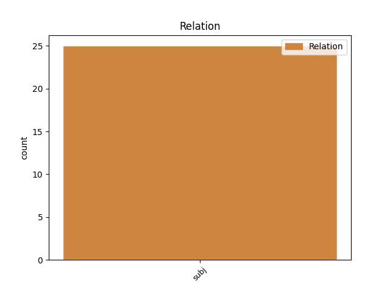
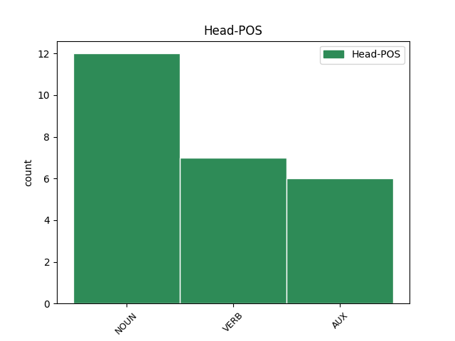
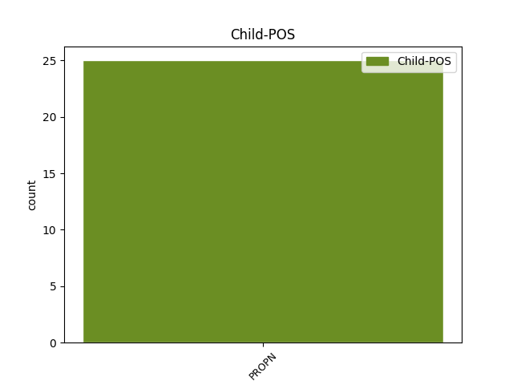

Distribution of features within this leaf



Agreement Rules sorted by frequency.
- When the dependent token is the subject(subj) of the head token, and the head token is NOUN and the dependent token is PROPN.
1 சோராபுதீன் _ _ _ _ 0 _ _ _
2 போலி _ _ _ _ 0 _ _ _
3 என்கவுன்ட்டர் _ _ _ _ 0 _ _ _
4 வழக்கில் _ _ _ _ 0 _ _ _
5 உள்துறை _ _ _ _ 0 _ _ _
6 அமைச்சர் _ _ _ _ 0 _ _ _
7 ஆக _ _ _ _ 0 _ _ _
8 இருந்த _ _ _ _ 0 _ _ _
9 அமித் _ _ _ _ 0 _ _ _
10 ஷா ஷா PROPN NEN-3SH-- Case=Nom|Gender=Com|Number=Sing|Person=3|Polite=Form 13 subj _ LTranslit=ṣā|Translit=ṣā
11 சிபிஐ _ _ _ _ 0 _ _ _
12 போலீஸாரால் _ _ _ _ 0 _ _ _
13 கைது கைது NOUN NNN-3SN-- Case=Nom|Gender=Neut|Number=Sing|Person=3 0 _ _ _
14 செய்யப்பட்ட _ _ _ _ 0 _ _ _
15 விவகாரம் _ _ _ _ 0 _ _ _
16 தேர்தல் _ _ _ _ 0 _ _ _
17 பிரசாரத்தில் _ _ _ _ 0 _ _ _
18 முக்கிய _ _ _ _ 0 _ _ _
19 இடத்தைப் _ _ _ _ 0 _ _ _
20 பெற்ற் _ _ _ _ 0 _ _ _
21 இருந்தது _ _ _ _ 0 _ _ _
22 . _ _ _ _ 0 _ _ _
1 சென்னையில் _ _ _ _ 0 _ _ _
2 கஸ்தூரிபா _ _ _ _ 0 _ _ _
3 காந்தி _ _ _ _ 0 _ _ _
4 தாய் _ _ _ _ 0 _ _ _
5 சேய் _ _ _ _ 0 _ _ _
6 நல _ _ _ _ 0 _ _ _
7 மருத்துவமனையின் _ _ _ _ 0 _ _ _
8 125-ம் _ _ _ _ 0 _ _ _
9 ஆண்டு _ _ _ _ 0 _ _ _
10 விழா _ _ _ _ 0 _ _ _
11 - _ _ _ _ 0 _ _ _
12 சேப்பாக்கம் _ _ _ _ 0 _ _ _
13 சட்டப் _ _ _ _ 0 _ _ _
14 பேரவை _ _ _ _ 0 _ _ _
15 உறுப்பினர் _ _ _ _ 0 _ _ _
16 தொகுதி _ _ _ _ 0 _ _ _
17 மேம்பாட்டு _ _ _ _ 0 _ _ _
18 நிதிய் _ _ _ _ 0 _ _ _
19 இலிருந்து _ _ _ _ 0 _ _ _
20 கட்டப்பட்ட _ _ _ _ 0 _ _ _
21 கட்டடங்களின் _ _ _ _ 0 _ _ _
22 திறப்பு _ _ _ _ 0 _ _ _
23 விழா _ _ _ _ 0 _ _ _
24 - _ _ _ _ 0 _ _ _
25 இதய _ _ _ _ 0 _ _ _
26 நோய் _ _ _ _ 0 _ _ _
27 மற்றும் _ _ _ _ 0 _ _ _
28 மகளிர் _ _ _ _ 0 _ _ _
29 கருப்பை _ _ _ _ 0 _ _ _
30 வாய் _ _ _ _ 0 _ _ _
31 , _ _ _ _ 0 _ _ _
32 மார்பகப் _ _ _ _ 0 _ _ _
33 புற்றுநோய்த் _ _ _ _ 0 _ _ _
34 தடுப்புத் _ _ _ _ 0 _ _ _
35 திட்டங்களை _ _ _ _ 0 _ _ _
36 வியாழக்கிழமை _ _ _ _ 0 _ _ _
37 தொடங்கி _ _ _ _ 0 _ _ _
38 வைத்து _ _ _ _ 0 _ _ _
39 முதல்வர் _ _ _ _ 0 _ _ _
40 கருணாநிதி கருணாநிதி PROPN NEN-3SH-- Case=Nom|Gender=Com|Number=Sing|Person=3|Polite=Form 41 subj _ LTranslit=karuṇāniti|Translit=karuṇāniti
41 பேசியத் பேசு VERB VzND3SNAA Case=Nom|Gender=Neut|Number=Sing|Person=3|Polarity=Pos|Tense=Past|VerbForm=Ger|Voice=Act 0 _ _ _
42 ஆவது _ _ _ _ 0 _ _ _
43 : _ _ _ _ 0 _ _ _
44 . _ _ _ _ 0 _ _ _
1 சாகும் _ _ _ _ 0 _ _ _
2 வரை _ _ _ _ 0 _ _ _
3 சிறையில் _ _ _ _ 0 _ _ _
4 அடைத்து _ _ _ _ 0 _ _ _
5 வைத்த் _ _ _ _ 0 _ _ _
6 இருந்தால் _ _ _ _ 0 _ _ _
7 உம் _ _ _ _ 0 _ _ _
8 செய்யாத _ _ _ _ 0 _ _ _
9 குற்றத்துக்க் _ _ _ _ 0 _ _ _
10 ஆக _ _ _ _ 0 _ _ _
11 மன்னிப்பு _ _ _ _ 0 _ _ _
12 கேட்க _ _ _ _ 0 _ _ _
13 மாட்டேன் _ _ _ _ 0 _ _ _
14 என்று _ _ _ _ 0 _ _ _
15 இலங்கை _ _ _ _ 0 _ _ _
16 ராணுவத்தின் _ _ _ _ 0 _ _ _
17 முன்னாள் _ _ _ _ 0 _ _ _
18 தளபதி _ _ _ _ 0 _ _ _
19 சரத் _ _ _ _ 0 _ _ _
20 பொன்சேகா பொன்சேகா PROPN NEN-3SH-- Case=Nom|Gender=Com|Number=Sing|Person=3|Polite=Form 22 subj _ LTranslit=poncēkā|Translit=poncēkā
21 கூறிய் _ _ _ _ 0 _ _ _
22 உள்ளத் உள் AUX VZNT3SNAA Case=Nom|Gender=Neut|Number=Sing|Person=3|Polarity=Pos|VerbForm=Ger|Voice=Act 0 _ _ _
23 ஆக _ _ _ _ 0 _ _ _
24 தகவல்கள் _ _ _ _ 0 _ _ _
25 வெளியாகிய் _ _ _ _ 0 _ _ _
26 உள்ளன _ _ _ _ 0 _ _ _
27 . _ _ _ _ 0 _ _ _
Disagree Examples:
1 அமெரிக்க _ _ _ _ 0 _ _ _
2 பத்திரிகைய் _ _ _ _ 0 _ _ _
3 ஆன _ _ _ _ 0 _ _ _
4 நியூஸ்வீக் நியூஸ்வீக் PROPN NEN-3SN-- Case=Nom|Gender=Neut|Number=Sing|Person=3 20 subj _ LTranslit=niyūsvīk|SpaceAfter=No|Translit=niyūsvīk
5 , _ _ _ _ 0 _ _ _
6 உலக _ _ _ _ 0 _ _ _
7 நாடுகளில் _ _ _ _ 0 _ _ _
8 சுகாதாரம் _ _ _ _ 0 _ _ _
9 , _ _ _ _ 0 _ _ _
10 கல்வி _ _ _ _ 0 _ _ _
11 , _ _ _ _ 0 _ _ _
12 பொருளாதாரம் _ _ _ _ 0 _ _ _
13 , _ _ _ _ 0 _ _ _
14 அரசியல் _ _ _ _ 0 _ _ _
15 ஆகிய _ _ _ _ 0 _ _ _
16 அம்சங்களை _ _ _ _ 0 _ _ _
17 அடிப்படைய் _ _ _ _ 0 _ _ _
18 ஆக _ _ _ _ 0 _ _ _
19 வைத்துத் _ _ _ _ 0 _ _ _
20 தொகுத்ததில் தொகு VERB VzLD3SNAA Case=Loc|Gender=Neut|Number=Sing|Person=3|Polarity=Pos|Tense=Past|VerbForm=Ger|Voice=Act 0 _ _ _
21 இந்த _ _ _ _ 0 _ _ _
22 முடிவு _ _ _ _ 0 _ _ _
23 வெளியாகிய் _ _ _ _ 0 _ _ _
24 உள்ளது _ _ _ _ 0 _ _ _
25 . _ _ _ _ 0 _ _ _
1 இந்தியாவின் _ _ _ _ 0 _ _ _
2 அண்டை _ _ _ _ 0 _ _ _
3 நாடுகள் _ _ _ _ 0 _ _ _
4 ஆன _ _ _ _ 0 _ _ _
5 சீனா சீனா PROPN NEN-3SN-- Case=Nom|Gender=Neut|Number=Sing|Person=3 7 subj _ LTranslit=cīnā|Translit=cīnā
6 59வது _ _ _ _ 0 _ _ _
7 இடத்தைய் இடம் NOUN NNA-3SN-- Case=Acc|Gender=Neut|Number=Sing|Person=3 0 _ _ _
8 உம் _ _ _ _ 0 _ _ _
9 , _ _ _ _ 0 _ _ _
10 இலங்கை _ _ _ _ 0 _ _ _
11 66வது _ _ _ _ 0 _ _ _
12 இடத்தைய் _ _ _ _ 0 _ _ _
13 உம் _ _ _ _ 0 _ _ _
14 பங்களாதேஷ் _ _ _ _ 0 _ _ _
15 மற்றும் _ _ _ _ 0 _ _ _
16 பாகிஸ்தான் _ _ _ _ 0 _ _ _
17 ஆகியவை _ _ _ _ 0 _ _ _
18 முறையே _ _ _ _ 0 _ _ _
19 88 _ _ _ _ 0 _ _ _
20 மற்றும் _ _ _ _ 0 _ _ _
21 89வது _ _ _ _ 0 _ _ _
22 இடத்தைய் _ _ _ _ 0 _ _ _
23 உம் _ _ _ _ 0 _ _ _
24 பிடித்த் _ _ _ _ 0 _ _ _
25 உள்ளன _ _ _ _ 0 _ _ _
26 . _ _ _ _ 0 _ _ _
1 இந்தியாவின் _ _ _ _ 0 _ _ _
2 அண்டை _ _ _ _ 0 _ _ _
3 நாடுகள் _ _ _ _ 0 _ _ _
4 ஆன _ _ _ _ 0 _ _ _
5 சீனா _ _ _ _ 0 _ _ _
6 59வது _ _ _ _ 0 _ _ _
7 இடத்தைய் _ _ _ _ 0 _ _ _
8 உம் _ _ _ _ 0 _ _ _
9 , _ _ _ _ 0 _ _ _
10 இலங்கை இலங்கை PROPN NEN-3SN-- Case=Nom|Gender=Neut|Number=Sing|Person=3 12 subj _ LTranslit=ilaṅkai|Translit=ilaṅkai
11 66வது _ _ _ _ 0 _ _ _
12 இடத்தைய் இடம் NOUN NNA-3SN-- Case=Acc|Gender=Neut|Number=Sing|Person=3 0 _ _ _
13 உம் _ _ _ _ 0 _ _ _
14 பங்களாதேஷ் _ _ _ _ 0 _ _ _
15 மற்றும் _ _ _ _ 0 _ _ _
16 பாகிஸ்தான் _ _ _ _ 0 _ _ _
17 ஆகியவை _ _ _ _ 0 _ _ _
18 முறையே _ _ _ _ 0 _ _ _
19 88 _ _ _ _ 0 _ _ _
20 மற்றும் _ _ _ _ 0 _ _ _
21 89வது _ _ _ _ 0 _ _ _
22 இடத்தைய் _ _ _ _ 0 _ _ _
23 உம் _ _ _ _ 0 _ _ _
24 பிடித்த் _ _ _ _ 0 _ _ _
25 உள்ளன _ _ _ _ 0 _ _ _
26 . _ _ _ _ 0 _ _ _
1 அமெரிக்கா அமெரிக்கா PROPN NEN-3SN-- Case=Nom|Gender=Neut|Number=Sing|Person=3 3 subj _ LTranslit=amerikkā|Translit=amerikkā
2 11வது _ _ _ _ 0 _ _ _
3 இடத்தைய் இடம் NOUN NNA-3SN-- Case=Acc|Gender=Neut|Number=Sing|Person=3 0 _ _ _
4 உம் _ _ _ _ 0 _ _ _
5 , _ _ _ _ 0 _ _ _
6 ஜெர்மனி _ _ _ _ 0 _ _ _
7 12வது _ _ _ _ 0 _ _ _
8 இடத்தைய் _ _ _ _ 0 _ _ _
9 உம் _ _ _ _ 0 _ _ _
10 , _ _ _ _ 0 _ _ _
11 இங்கிலாந்து _ _ _ _ 0 _ _ _
12 14வது _ _ _ _ 0 _ _ _
13 இடத்தைய் _ _ _ _ 0 _ _ _
14 உம் _ _ _ _ 0 _ _ _
15 பிடித்த் _ _ _ _ 0 _ _ _
16 உள்ளன _ _ _ _ 0 _ _ _
17 . _ _ _ _ 0 _ _ _
1 அமெரிக்கா _ _ _ _ 0 _ _ _
2 11வது _ _ _ _ 0 _ _ _
3 இடத்தைய் _ _ _ _ 0 _ _ _
4 உம் _ _ _ _ 0 _ _ _
5 , _ _ _ _ 0 _ _ _
6 ஜெர்மனி ஜெர்மனி PROPN NEN-3SN-- Case=Nom|Gender=Neut|Number=Sing|Person=3 8 subj _ LTranslit=jermani|Translit=jermani
7 12வது _ _ _ _ 0 _ _ _
8 இடத்தைய் இடம் NOUN NNA-3SN-- Case=Acc|Gender=Neut|Number=Sing|Person=3 0 _ _ _
9 உம் _ _ _ _ 0 _ _ _
10 , _ _ _ _ 0 _ _ _
11 இங்கிலாந்து _ _ _ _ 0 _ _ _
12 14வது _ _ _ _ 0 _ _ _
13 இடத்தைய் _ _ _ _ 0 _ _ _
14 உம் _ _ _ _ 0 _ _ _
15 பிடித்த் _ _ _ _ 0 _ _ _
16 உள்ளன _ _ _ _ 0 _ _ _
17 . _ _ _ _ 0 _ _ _